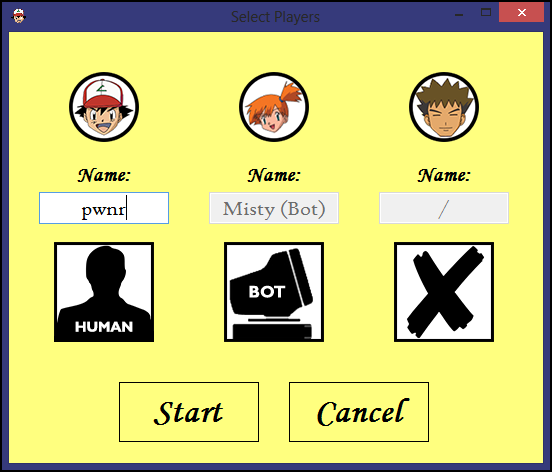
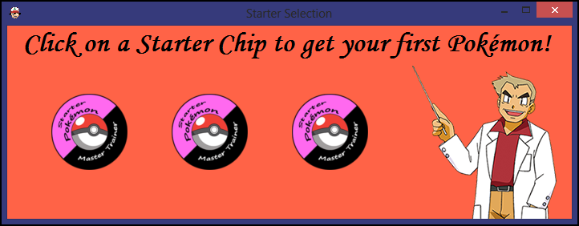

When a new game is started, the first thing to do is select the amount and types of players. The Player Selection screen shows 3 squares, each representing a single player. Originally, all three of these squares have a human player icon, which means that there will be 3 human players. You can click on one of these squares to change it. Clicking on a square once will change it to a bot, clicking on it again will change it to a disabled player. To enable a player again, just click it once more. There must be at least 2 players and at least 1 of them has to be human. You will not be able to continue otherwise. Every human player can pick a custom name. Bot names are fixed. If a name is empty, the game can't be started.
When the player selection is done, the order of play must be determined. All players will roll a dice. In case of a tie, the dice will be rerolled. The player with the highest roll will go first, followed by the others in descending order. This order is both for picking a starter and for actually moving on the board.
There are 3 starter Pokémon to pick from. Unlike other Pokémon games, you cannot choose here. The 3 starter chips will be shown with their backside up. They are laid out in a random order. Click one to reveal who it is and to get it as your very own Pokémon!
All players start out in Pallet Town. From there the road goes upwards towards Viridian City and beyond. Roll the dice and get going!
It is possible to save a game and come back to it later. An auto-save functionality will save the game after every turn and upon closing the board, so you can stop playing whenever you want. If you do not have the auto-save functionality on, you will still be prompted to save when returning to the main screen. If a saved game is available, you can select "Load Game" instead of "New Game" to start playing. The board and all players will be loaded in the exact state that they were in when the game was last saved. There is no need to go through all of the steps explained above.